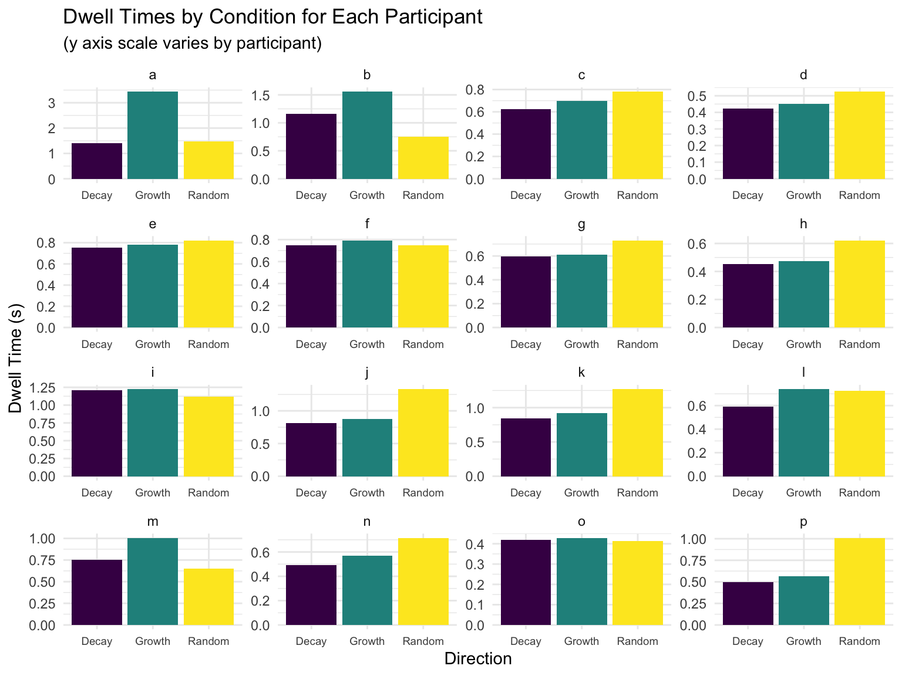

Untitled
Scott Wallner, Tess Sameshima, & Ben Chaloupka
11/25/2020
This is our title
Authors
Scott Wallner, Tess Sameshima, and Ben Chaloupka
Ben Chaloupka
Challenges faced along the way
this text will appear on the slide
Victories and things to celebrate

Challenges you are still facing
fractal_data <- clean_names(import(here("data", "frac_total.csv")))
raw_A <- clean_names(import(here("data", "frac_SA.csv")))
raw_B <- clean_names(import(here("data", "frac_SB.csv")))fractal_data <- fractal_data %>%
pivot_longer(cols = a:p,
names_to = "participant",
values_to = "dwell_time")
fractal_data <- fractal_data %>%
mutate(direction = factor(direction, labels = c("Decay", "Growth", "Random")),
participant = factor(participant),
disp_image = factor(disp_image))
fractal_data <- fractal_data %>%
mutate(fractal_type = case_when(
grepl("Fern_A", disp_image, fixed = T) ~ "Fern_A",
grepl("Fern_B", disp_image, fixed = T) ~ "Fern_B",
grepl("Fractal_Curves_A", disp_image, fixed = T) ~ "Fractal_Curves_A",
grepl("Fractal_Curves_B", disp_image, fixed = T) ~ "Fractal_Curves_B",
grepl("Fractal_Curves_C", disp_image, fixed = T) ~ "Fractal_Curves_C",
grepl("Fractal_Curves_D", disp_image, fixed = T) ~ "Fractal_Curves_D",
grepl("Fractal_Curves_E", disp_image, fixed = T) ~ "Fractal_Curves_E",
grepl("Hilbert", disp_image, fixed = T) ~ "Hilbert",
grepl("Moore", disp_image, fixed = T) ~ "Moore",
grepl("Pythagoras_A", disp_image, fixed = T) ~ "Pythagoras_A",
grepl("Pythagoras_B", disp_image, fixed = T) ~ "Pythagoras_B",
grepl("Sierpinski_A", disp_image, fixed = T) ~ "Sierpinski_A",
grepl("Sierpinski_B", disp_image, fixed = T) ~ "Sierpinski_B",
grepl("Tree_A", disp_image, fixed = T) ~ "Tree_A"
))
fractal_data <- fractal_data %>%
mutate(sequence_position = case_when(
grepl("A0.png", disp_image, fixed = T) ~ 1,
grepl("B0.png", disp_image, fixed = T) ~ 1,
grepl("C0.png", disp_image, fixed = T) ~ 1,
grepl("D0.png", disp_image, fixed = T) ~ 1,
grepl("E0.png", disp_image, fixed = T) ~ 1,
grepl("_0.png", disp_image, fixed = T) ~ 1,
grepl("A100.png", disp_image, fixed = T) ~ 2,
grepl("B100.png", disp_image, fixed = T) ~ 2,
grepl("A1.png", disp_image, fixed = T) ~ 2,
grepl("B1.png", disp_image, fixed = T) ~ 2,
grepl("C1.png", disp_image, fixed = T) ~ 2,
grepl("D1.png", disp_image, fixed = T) ~ 2,
grepl("E1.png", disp_image, fixed = T) ~ 2,
grepl("_1.png", disp_image, fixed = T) ~ 2,
grepl("A200.png", disp_image, fixed = T) ~ 3,
grepl("B200.png", disp_image, fixed = T) ~ 3,
grepl("A2.png", disp_image, fixed = T) ~ 3,
grepl("B2.png", disp_image, fixed = T) ~ 3,
grepl("C2.png", disp_image, fixed = T) ~ 3,
grepl("D2.png", disp_image, fixed = T) ~ 3,
grepl("E2.png", disp_image, fixed = T) ~ 3,
grepl("_2.png", disp_image, fixed = T) ~ 3,
grepl("A400.png", disp_image, fixed = T) ~ 4,
grepl("B400.png", disp_image, fixed = T) ~ 4,
grepl("A3.png", disp_image, fixed = T) ~ 4,
grepl("B3.png", disp_image, fixed = T) ~ 4,
grepl("C3.png", disp_image, fixed = T) ~ 4,
grepl("D3.png", disp_image, fixed = T) ~ 4,
grepl("E3.png", disp_image, fixed = T) ~ 4,
grepl("_3.png", disp_image, fixed = T) ~ 4,
grepl("A800.png", disp_image, fixed = T) ~ 5,
grepl("B800.png", disp_image, fixed = T) ~ 5,
grepl("A4.png", disp_image, fixed = T) ~ 5,
grepl("B4.png", disp_image, fixed = T) ~ 5,
grepl("C4.png", disp_image, fixed = T) ~ 5,
grepl("D4.png", disp_image, fixed = T) ~ 5,
grepl("E4.png", disp_image, fixed = T) ~ 5,
grepl("_4.png", disp_image, fixed = T) ~ 5,
grepl("A1600.png", disp_image, fixed = T) ~ 6,
grepl("B1600.png", disp_image, fixed = T) ~ 6,
grepl("A5.png", disp_image, fixed = T) ~ 6,
grepl("B5.png", disp_image, fixed = T) ~ 6,
grepl("C5.png", disp_image, fixed = T) ~ 6,
grepl("D5.png", disp_image, fixed = T) ~ 6,
grepl("E5.png", disp_image, fixed = T) ~ 6,
grepl("_5.png", disp_image, fixed = T) ~ 6,
grepl("A3200.png", disp_image, fixed = T) ~ 7,
grepl("B3200.png", disp_image, fixed = T) ~ 7,
grepl("A6.png", disp_image, fixed = T) ~ 7,
grepl("A6400.png", disp_image, fixed = T) ~ 8,
grepl("B6400.png", disp_image, fixed = T) ~ 8,
grepl("A7.png", disp_image, fixed = T) ~ 8,
grepl("A12800.png", disp_image, fixed = T) ~ 9,
grepl("B12800.png", disp_image, fixed = T) ~ 9
))
raw_A_long <- raw_A %>%
pivot_longer(cols = a:f, names_to = "participant", values_to = "dwell_time")
raw_B_long <- raw_B %>%
pivot_longer(cols = g:p, names_to = "participant", values_to = "dwell_time")cutoff <- mean(fractal_data$dwell_time) + 3 * sd(fractal_data$dwell_time)
filtered_fractal_data <- fractal_data %>%
filter(dwell_time < cutoff)fractal_data_wide <- fractal_data %>%
pivot_wider(names_from = direction,
values_from = dwell_time) %>%
select(-Random) %>%
mutate(Growth = unlist(Growth),
Decay = unlist(Decay),
diff_dwell_time = Growth - Decay)## Warning: Values are not uniquely identified; output will contain list-cols.
## * Use `values_fn = list` to suppress this warning.
## * Use `values_fn = length` to identify where the duplicates arise
## * Use `values_fn = {summary_fun}` to summarise duplicatesfractal_data_wide %>%
group_by(participant) %>%
summarise(mean_diff_dwell_time = mean(diff_dwell_time)) %>%
knitr::kable(col.names = c("Participant", "Mean Difference in Dwell Times between Growth and Decay"))## `summarise()` ungrouping output (override with `.groups` argument)| Participant | Mean Difference in Dwell Times between Growth and Decay |
|---|---|
| a | 2.0253251 |
| b | 0.4027316 |
| c | 0.0727060 |
| d | 0.0262463 |
| e | 0.0260263 |
| f | 0.0468790 |
| g | 0.0172402 |
| h | 0.0201722 |
| i | 0.0148214 |
| j | 0.0643832 |
| k | 0.0784663 |
| l | 0.1487259 |
| m | 0.2542457 |
| n | 0.0746982 |
| o | 0.0113360 |
| p | 0.0746982 |
new_data_for_now <- fractal_data %>%
group_by(participant, direction) %>%
summarise(mean_dwell_time = round(mean(dwell_time), 3),
sd_dwell_time = round(sd(dwell_time), 3))## `summarise()` regrouping output by 'participant' (override with `.groups` argument)new_data_for_later <- fractal_data %>%
group_by(direction) %>%
summarise(mean_dwell_time = round(mean(dwell_time), 3),
sd_dwell_time = round(sd(dwell_time), 3))## `summarise()` ungrouping output (override with `.groups` argument)fractal_data %>%
ggplot(aes(x = direction, y = dwell_time, fill = direction)) +
geom_col(data = new_data_for_now, aes(y = mean_dwell_time)) +
facet_wrap(~participant, scales = "free") +
labs(x = "Direction", y = "Dwell Time (s)", title = "Dwell Times by Condition for Each Participant", subtitle = "(y axis scale varies by participant)") +
theme(legend.position = "none") +
scale_fill_viridis_d() +
theme(axis.text.x = element_text(size = 7))